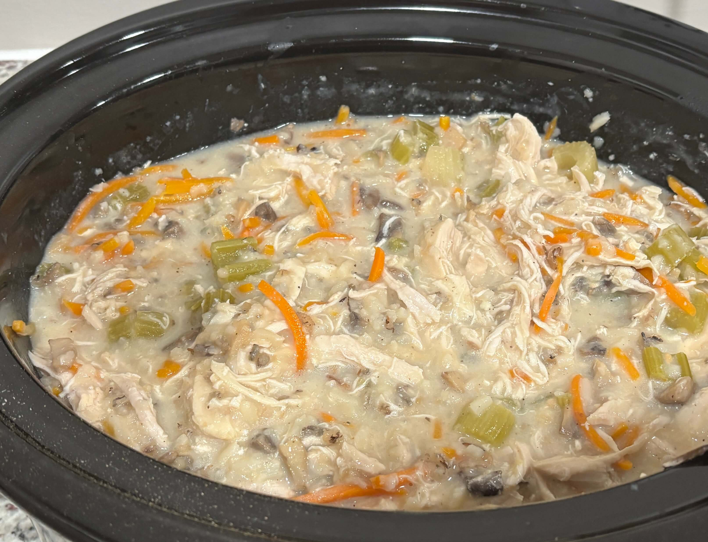

Home
Chicken and Wild Rice Soup

10 servings
6 hours 15 min
Ingredients
- 3/4 cup uncooked wild rice, rinsed
- 1 pound boneless, skinless chicken breasts
- 2 cups mirepoix (chopped celery, carrots, and onions)
- 2 cloves garlic, minced
- 5 cups chicken broth
- 1 1/2 teaspoons poultry seasoning
- 1 teaspoon garlic powder
- 1 teaspoon onion powder
- 1 tablespoon Better Than Bouillon roasted chicken base
- 6 tablespoons butter
- 4 tablespoons all purpose flour
- 1 1/2 cups whole milk
- 1/2 teaspoon salt
- 3/4 cup heavy cream
- favorite bread for dunking
- Optional: diced mushromms
Steps
- Place the uncooked wild rice, raw chicken, mirepoix, garlic, chicken broth, poultry seasoning, garlic powder, onion powder, bouillon, and mushrooms if using in a slow cooker.
- Cover and cook on low for 6 hours. If you're able to: remove the chicken after 3 hours to prevent overcooking. Cut into bite-sized chunks or shreds; set aside in the fridge. Otherwise, just shred chicken in the crockpot after 6 hours. It will still turn out great. When it's done, the wild rice grains should be opened up, and there should be a small amount of liquid left.
- (30 min before serving) Warm the milk in the microwave for 60-90 seconds - this makes the bechamel in the next step smoother.
- Melt the butter in a saucepan. Add the flour and let the mixture cook out for a minute. Add 1/2 cup of milk, whisk, and let it thicken slightly. Repeat until all the milk is gone and you're left with a creamy thickened base. Season with salt.
- Add the bechamel, chicken, and heavy cream to the slow cooker. Stir to distribute.
- Add extra broth or milk to adjust the consistency as you like it. Season with additional salt and pepper. Serve it with bread.